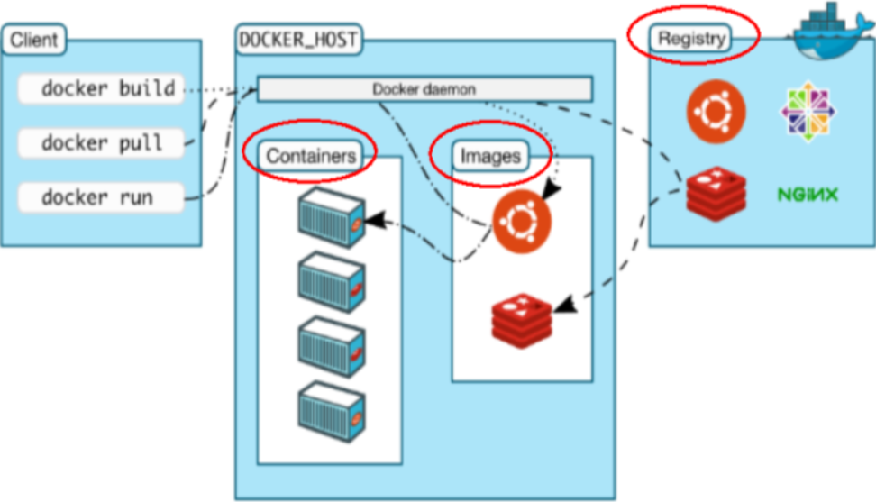
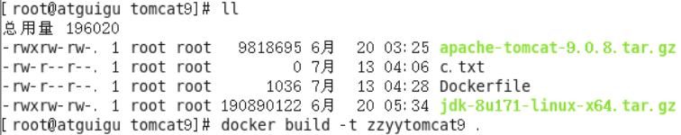

docker
- 初识
- Dockerfile
- 安装ONLYOFFICE(docker版)
- Dockerfile格式
- dockerfile Build
- doceker RUN Container
- container提交为image
- 离线安装docker
初识
安装docker
#安装docker
yum install -y docker
#开启docker服务
service docker start
#添加至开机启动
chkconfig --add docker
#检查
chkconfig --list docker
docker 构建
#docker images save
docker save -o centos.tar:docker.io/centos:latest
#docker images load
docker load < 'centos.tar'
docker基本
#拷贝文件 宿主机->container
#docker cp filepath containerName/containerId:targetPath
docker cp /root/1.txt ykt:/root/deploy/1cp.txt修改容器端口映射
docker stop 容器名
systemctl stop docker
cd /var/lib/docker/containers/`docker ps -a|grep 容器名|awk 'NR==2{print $1}'`*
/var/lib/docker/containers/[hash_of_the_container]/hostconfig.json
# 前面的端口为容器端口，后面的为映射到宿主机的端口
"PortBindings":{"6379/tcp":[{"HostIp":"","HostPort":"6380"}]
systemctl start docker
docker start 容器名
阿里加速器
获取加速器 https://cr.console.aliyun.com/#/accelerator
方案1
## 将加速参数添加到docker启动项
echo "DOCKER_OPTS=\"\$DOCKER_OPTS --registry-mirror={加速地址}\"" | sudo tee -a /etc/default/docker
## 重启
service docker restart方案2
## 编辑docker配置文件
mkdir -p /etc/docker
tee /etc/docker/daemon.json <<-'EOF'
{
"registry-mirrors": ["https://d8b3zdiw.mirror.aliyuncs.com"]
}
EOF
systemctl daemon-reload
systemctl restart docker搜索镜像 https://cr.console.aliyun.com/#/imageSearch
Dockerfile
FROM
# **安装ONLYOFFICE(docker版)
#设置阿里加速器
#pull onlyoffice-image
docker pull Dockerfile格式
# This dockerfile uses the ubuntu image
# VERSION 2 - EDITION 1
# Author: docker_user
# Command format: Instruction [arguments / command] ..
# 1、第一行必须指定 基础镜像信息
FROM ubuntu
# 2、维护者信息
MAINTAINER docker_user docker_user@email.com
# 3、镜像操作指令
RUN echo "deb http://archive.ubuntu.com/ubuntu/ raring main universe" >> /etc/apt/sources.list
RUN apt-get update && apt-get install -y nginx
RUN echo "\ndaemon off;" >> /etc/nginx/nginx.conf
ADD script.sh /root/deploy/
COPY script.sh /root/deploy/
# 4、容器启动执行指令
CMD /usr/sbin/nginxdockerfile Build
#通过dockerfile创建image imagename 小写
docker build -t registry/namespace/filename/imagename:tag .doceker RUN Container
#通过image启动一个容器
docker run -it -p 2306:3306 -p 80:8080 -v /data/ykt: /data --name containername imagename
container提交为image
docker container commit {cid} {image}image保存为tar.gz
docker save myimage:latest | gzip > myimage_latest.tar.gz网络
liao
HssaZe?ekEJ2
mvn deploy
mvn idea:idea
docker 拉取镜像
docker pull daocloud.io/library/centos:latest
# 0 - 停机（千万不能把initdefault 设置为0 ）
# 1 - 单用户模式
# 2 - 多用户，没有 NFS
# 3 - 完全多用户模式(标准的运行级)
# 4 - 没有用到
# 5 - X11 （xwindow)
# 6 - 重新启动 （千万不要把initdefault 设置为6 ）
mount --bind
/opt/alfresco-201707-0/apps/alfresco/data
docker run -it --name=hungry_kowalevski -v /test:/soft centos /bin/bashcentos_test
docker run --rm -v /usr/local/bin:/target jpetazzo/nsenter
容器大小
alfresco安装
docker run -it -p 8080:81 --name file2.0 --storage-opt size=40G -v /var/dockerdata:/opt/alfresco-201707-0/apps/alfresco/data alfresco
docker run -it -p 8080:81 --name file2.0 --storage-opt size=40G -v /var/dockerdata:/opt/alfresco/apps/alfresco/data alfresco
docker run -it -p 80:81 --name fs --storage-opt size=40G -v /data/alfresco:/opt/alfresco/apps/alfresco/data alfresco:1.0
docker run -it -p 80:81 --name fs -v /data/alfresco:/opt/alfresco/apps/alfresco/data alfresco:1.0
启动文档服务器
docker run -it -p 80:80 --name fs -v /data/alfresco:/opt/alfresco/apps/alfresco/data alfresco:1.0
docker run -it -p 80:80 --name fs -v /data/alfresco:/opt/alfresco-201707-0 alfresco:1.0
docker run -it -p 80:80 --name fs -v /data/alfresco:/data/fs alfresco:1.0
--
/opt/alfresco-201707-0/ctlscript.sh start
user
login user
root
123456
root123
root123
docker启动容器
docker run -it -p 80:81 --name file2.0 -v /var/dockerdata:/opt/alfresco-201707-0/apps/alfresco/data alfresco:2.0
添加ip映射规则
iptables -t nat -A DOCKER ! -i docker0 -p tcp -m tcp --dport 80 -j DNAT --to-destination 172.17.0.5:80
iptables -t nat -A POSTROUTING -s 172.17.0.5/32 -d 172.17.0.5/32 -p tcp -m tcp --dport 80 -j MASQUERADE
iptables -t filter -A DOCKER -d 172.17.0.5/32 ! -i docker0 -o docker0 -p tcp -m tcp --dport 80 -j ACCEPT
p://www.walkclass.com/cloud/md/app/getAndroidLatestVer.jsonhtt离线安装docker
#!/bin/bash
mkdir -p /opt/xb/work
mkdir -p /opt/xb/bin
cd /opt/xb/work
curl -O http://p.walkclass.com/deploy/docker-18.09.0.tgz
tar -xvf docker-18.09.0.tgz
mv docker/* /opt/xb/bin
chmod +x /opt/xb/bin/*
echo 'export DOCKER_HOME=/opt/xb/bin/' >> /etc/profile
echo 'export PATH=$DOCKER_HOME:$PATH' >> /etc/profile
source /etc/profile
echo 'export DOCKER_HOME=/opt/xb/bin/' >> ~/.bashrc
echo 'export PATH=$DOCKER_HOME:$PATH' >> ~/.bashrc
cd /opt/xb/work
cat > docker.service <<"EOF"
[Unit]
Description=Docker Application Container Engine
Documentation=http://docs.docker.io
[Service]
WorkingDirectory=/data/xb/docker
Environment="PATH=/opt/xb/bin:/bin:/sbin:/usr/bin:/usr/sbin"
ExecStart=/opt/xb/bin/dockerd
ExecReload=/bin/kill -s HUP $MAINPID
Restart=on-failure
RestartSec=5
LimitNOFILE=infinity
LimitNPROC=infinity
LimitCORE=infinity
Delegate=yes
KillMode=process
[Install]
WantedBy=multi-user.target
EOF
cp docker.service /usr/lib/systemd/system/
cd /opt/xb/work
cat > docker-daemon.json <<EOF
{
"registry-mirrors": ["https://hub-mirror.c.163.com", "https://docker.mirrors.ustc.edu.cn"],
"insecure-registries": ["docker02:35000"],
"max-concurrent-downloads": 20,
"live-restore": true,
"max-concurrent-uploads": 10,
"debug": true,
"data-root": "/data/xb/docker/data",
"exec-root": "/data/xb/docker/exec",
"log-opts": {
"max-size": "100m",
"max-file": "5"
}
}
EOF
mkdir -p /etc/docker/
cp docker-daemon.json /etc/docker/daemon.json
systemctl daemon-reload && systemctl enable docker && systemctl restart docker尚docker
docker容器数据卷
DockerFile解析
官方centos镜像
FROM scratch #源镜像
MAINTAINER https://github.com/CentOS/sig-cloud-instance-images #作者
ADD centos-7-docker.tar.xz /
LABEL org.label-schema.schema-version = "1.0" \
org.label-schema.name="CentOS Base Image" \
org.label-schema.vendor="CentOS" \
org.label-schema.license="GPLv2" \
org.label-schema.build-date="20180531"
# Default command
CMD ["/bin/bash"]基本
每条保留字指令必须为大写字母且后面要跟随至少一个参数
指令从上往下执行
#表示注释
每条指令都会创建一个新的镜像层，并且对镜像层进行提交
执行Dockerfile过程:
docker从基础镜像运行一个容器
执行一条指令并对容器作出修改
执行类似 docker commit的操作提交一个新的镜像层
docker再基于刚提交的镜像运行一个新容器
执行 dockerfile中的下一条指令直到所有指令都执行完成
保留字指令
FROM
#基础镜像，当前新镜像是基于哪个镜像的
MAINTAINER
#镜像维护者的姓名和邮箱地址
RUN
#容器构建时需要运行的命令
EXPOSE
#当前容器对外暴露出的端口
WORKDIR
#指定在创建容器后，终端默认登陆的进来工作目录，一个落脚点
ENV
#用来在构建镜像过程中设置环境变量
ADD
#将宿主机目录下的文件拷贝进镜像且ADD命令会自动处理URL和解压tar压缩包
COPY
#类似ADD，拷贝文件和目录到镜像中。将从构建上下文目录中《源路径》的文件/录复制到新的一层的镜像内的《目标路径》位置
#语法1 COPY src dest 语法2 COPY ["src","dest"]
VOLUME
#容器数据卷，用于数据保存和持久化工作
CMD
#1.指定一个容器启动时要运行的命令
#2.Dockerfile中可以有多个CMD指令，但只有最后一个生效，CMD会被 docker run之后的参数替换
ENTRYPOINT
#1.指定一个容器启动时要运行的命令
#2.ENTRYPOINT的目的和CMD一样，都是在指定容器启动程序及参数
ONBUILD
#当构建一个被继承的Dockerfile时运行命令，父镜像在被子继承后父镜像的onbuild被触发| BUILD | Both | RUN |
|---|---|---|
| FROM | WORKDIR | CMD |
| MAINTAINER | USER | ENV |
| COPY | EXPOSE | |
| ADD | VOLUME | |
| RUN | ENTRYPOINT | |
| ONBUILD | ||
| .dockerignore |
CMD
CMD容器启动命令
CM指令的格式和RUN相似，也是两种格式
shell格式:CMD <命令>
exec格式:CMD ["可执行文件","参数1","参数2"]
参数列表格式:CMD【“参数1”，“参数2“…】。在指定了 ENTRYPOINT指令后，用CMD指定具体的参数案例
- Base镜像（scratch）
Docker Hub中99%的镜像都是通过在base镜像中安装和配置需要的软件构建出来的
- 自定义centos
创建dockerfile文件
vim dockerfilemycentos dockerfile
FROM centos
MAINTAINER liao
ENV MYPATH /usr/local
#容器登录后的落脚点
WORKDIR $MYPATH
#RUN 命令可以合并减少images层数
RUN yum -y install vim
RUN yum -y install net-tools
EXPOSE 80
CMD echo $MYPATH
CMD echo "success------------ok"
CMD /bin/bash构建自定义镜像
docker build -t mycentos:0.1 . # 如果不是当前目录下的dockerfile 则需要-f指定dockerfile文件路径
docker bumysqlddocker/dockerfile2 mycentos:1-t .00.2 .docker run -it mycentos:0.1 #测试查看新的镜像效果docker history imageId #查看镜像变更历史dockerfile2 【CMD】
FROM centos
RUN yum install -y curl
CMD ["curl","-s","https:/ip.cn"] #多个CMD只会执行最后一个docker build -f dockerfile2 -t myip:0.2 .docker run -it myip:0.1 #测试1
docker run -it myip:0.1 -i #测试2 报错 因为是CMDdockerfile3 【ENTRYPOINT】
FROM centos
RUN yum install -y curl
ENTRYPOINT ["curl","-s","https://ip. cn"]docker build -f dockerfile3 -t myip:0.3 .docker run -it myip:0.2 #测试1
docker run -it myip:0.2 -i #测试2 命令追加dockerfile4【onbuild】
FROM centos
RUN yum install -y curl
CMD ["curl","-s","https://ip. cn"]
ONBUILD RUN echo "father images onbuild--------886"docker build -f dockerfile4 -t myip_father .dockerfile5
FROM myip_father
RUN yum install -y curl
CMD ["curl","-s","https://ip. cn"] docker build -f dockerfile5 -t my_son . #构建是触发dockerfile4的 onbuilddockerfile6
FROM centos MAINTAINER zzyy<zzyybs@126.com>
#把宿主机当前上下文的c.txt拷贝到容器/usr/loca1/路径下
COPY c.txt/usr /local/cincontainer.txt
#把java与tomcat添加到容器中
ADD jdk-8u171-1inux-x64.tar.gz /usr/1ocal/
ADD apache-tomcat-9.0.8.tar.gz/usr/1ocal/
#安装vim编辑器
RUN yum -y install vim
#设置工作访问时候的WORKDIR路径，登录落脚点
ENV MYPATH/usr/1ocal
WORKDIR $MYPATH
#配置java与tomcat环境变量
ENV JAVA HOME/usr/1ocal/jdk1.8.0171
ENV CLASSPATH $JAVA_HOME/lib/dt.jar:$JAVA_HOME/1ib/tools.jar
ENV CATALINA_HOME /usr/1ocal/apache-tomcat-9.0.8
ENV CATALINA_BASE /usr/local/apache-tomcat-9.0.8
ENV PATH $PATH":"$JAVA HOME/bin:$CATALINA_HOME/lib:$CATALINA_HOME/bin
#容器运行时监听的端口
EXPOSE 8080
#启动时运行tomcat
#ENTRYPOINT["/usr/1ocal/apache-tomcat-9.0.8/bin/startup.sh"]
#CMD["/usr/local/apache-tomcat-9.0.8/bin/catalina.sh"，"run"]
CMD/usr/local/apache-tomcat-9.0.8/bin/startup.sh&&tail-F/usr/local/apache-tomcat-9.0.8/bin/logs/catalina.out
运行tomcat
docker run -d -p 9080:8080 --name myt9 \
-v /zzyyuse/mydockerfile/tomcat9/test:/usr/local/apache-tomcat-9.0.8/webapps/test \
-v /zzyyuse/mydockerfile/tomcat9/tomcat9logs/:/usr/local/apache-tomcat-9.0.8/1ogs \
--privileged=true \
zzyytomcat9Docker常用安装
docker exec ba194da55684 sh -c ' exec mysqldump--all-databases -uroot -p"123456"'>/zzyyuse/all-databases. sql本地镜像发布
面试题快速过滤学渣 ，不管背还是会
 陕公安备案61092402000103号
陕公安备案61092402000103号